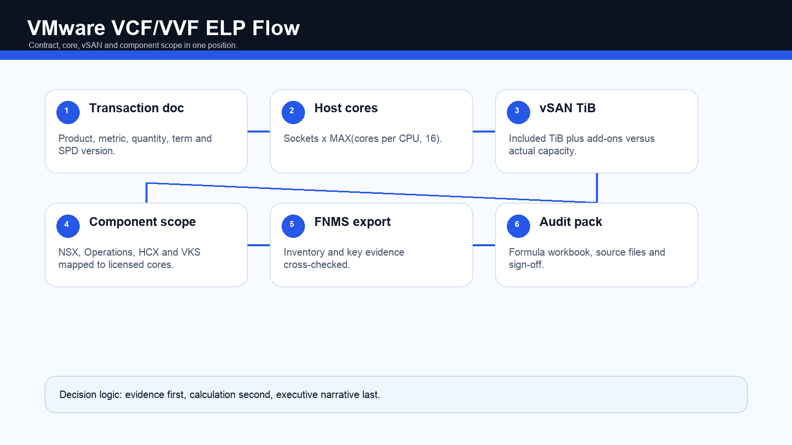
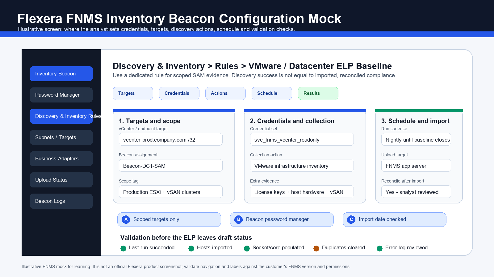

VMware licensing used to feel like a familiar infrastructure topic: vSphere, vCenter, ESXi hosts, socket-era thinking, support renewals and license keys. In the Broadcom era, that is not enough. A defensible VMware position now needs product bundle mapping, host-level physical core counts, vSAN capacity logic, agreement interpretation, version-specific reporting controls and a clean evidence pack.
Practitioner Notes
The senior answer is: VMware compliance is not a VM count. It is product or bundle entitlement plus physical ESXi core consumption plus vSAN TiB consumption plus bundled component scope plus agreement restrictions plus evidence quality.
For a SAM consultant, the key shift is to stop treating license keys as the position. Keys are activation evidence. The entitlement position comes from transaction documents, Broadcom portal exports, order forms, support dates, applicable Specific Program Documentation and legacy VMware records where they still matter. Consumption comes from vCenter, ESXi hardware data, vSAN capacity evidence, NSX, Aria or VCF Operations, HCX and inventory tooling such as Flexera FNMS.
| Term | Plain-English Meaning | SAM Treatment |
|---|---|---|
| ESXi host | Physical server running the VMware hypervisor. | Primary licensable hardware unit for vSphere, VVF and VCF core counts. |
| vCenter | Management plane for ESXi hosts and clusters. | Evidence source for host, cluster, version, license assignment and relationships. |
| vSAN | Software-defined storage using local disks inside ESXi hosts. | Separate TiB risk. Core compliance does not automatically mean vSAN compliance. |
| VVF | VMware vSphere Foundation bundle. | Core subscription with included vSAN capacity and component scope limits. |
| VCF | VMware Cloud Foundation full-stack private cloud bundle. | Core subscription with broader components, larger vSAN inclusion and portability/reporting considerations. |
| SPD | Specific Program Documentation. | Product-specific legal source for metric, minimums, component rights, cloud restrictions and reporting. |
This article is a SAM and ITAM operating guide based on the attached VMware Licensing Guide workbook. For a real customer decision, validate against the signed transaction document, applicable Broadcom agreement, order-date SPD, installed-release SPD and current portal evidence.
Broadcom-era VMware licensing moved the operational center of gravity away from standalone perpetual-license habits and toward subscription bundles such as VMware Cloud Foundation and VMware vSphere Foundation. That changes the ELP because the analyst must understand what the customer bought, which physical cores are in scope, whether vSAN capacity is covered, whether bundled components are used inside the permitted boundaries and whether version 9 reporting obligations exist.
| Old Habit | Current Reality | SAM Impact |
|---|---|---|
| Count CPU sockets for many vSphere positions. | Core licensing is central for VCF, VVF and current subscriptions. | Collect socket and core detail at host level, not only server model or VM counts. |
| Perpetual license plus SnS renewal was the usual operating model. | Subscription entitlement and support term now drive renewal and support risk. | Track entitlement start/end, support status, upgrade rights and reporting obligations. |
| Standalone SKUs could be mapped product by product. | Portfolio is consolidated around VVF, VCF and add-ons. | Bundle mapping matters more than isolated application recognition. |
| Separate component keys were often reviewed as the evidence. | Solution keys and VCF/VVF 9 license files change activation evidence. | Treat keys/files as technical evidence and reconcile back to legal entitlement. |
| Audit work was mostly document and deployment driven. | Version 9 introduces scheduled compliance report responsibilities. | Create a governance calendar and keep submission evidence. |
One practical version trap: standalone vSphere Standard and Enterprise Plus availability is release-dependent. A customer with legacy standalone entitlement cannot automatically assume it supports every feature or release in a VCF/VVF 9 estate. Version mapping is therefore a compliance control, not cosmetic documentation.
The first calculation step is product classification. If a cluster is wrongly classified as generic vSphere when it is actually VCF, or VVF when it consumes full-stack VCF components, the rest of the workbook can be mathematically neat and still wrong.
| Offer / Component | What It Is | ELP Treatment |
|---|---|---|
| vSphere / ESXi | Core virtualization layer running workloads on physical hosts. | Count physical cores on licensed ESXi hosts. |
| vCenter Server | Central management for hosts and clusters. | Validate instance entitlement, version rights and managed estate scope. |
| vSAN | Software-defined storage across ESXi hosts. | Calculate TiB entitlement and actual licensing-relevant capacity separately. |
| VVF | vSphere-led enterprise workload platform. | Core subscription; included vSAN is 0.25 TiB per VVF core; components are tied to VVF cores. |
| VCF | Full private-cloud stack including compute, storage, networking and operations. | Core subscription; included vSAN is 1 TiB per VCF core; component use must stay within VCF scope. |
| NSX | Software-defined networking and security. | Usually relevant under VCF component scope; check geography, export and permitted-use constraints. |
| Operations / Automation / Networks | Monitoring, automation and network operations capabilities. | Confirm they manage only licensed VCF/VVF cores unless a separate right exists. |
| HCX, VKS, Private AI Foundation | Migration, Kubernetes and AI-related capabilities where included or added. | Validate entitlement source, SKU inclusion, support/lifecycle assumptions and component scope. |
VVF
Best understood as a vSphere Foundation platform. Core metric, 16-core-per-CPU minimum, 0.25 TiB vSAN per core, operations scope tied to VVF cores, and cloud/hosting restrictions to check carefully.
VCF
Best understood as the full-stack private cloud bundle. Core metric, 16-core-per-CPU minimum, 1 TiB vSAN per core, NSX and operations components inside scope, and certified-cloud portability rules.
For VCF and VVF, the core calculation is physical host based. The important rule is the 16-core minimum per physical CPU or processor. The mistake to avoid is applying one minimum to the whole estate. The minimum applies to each processor inside each host.
Required licensed cores per CPU = MAX(actual physical cores in that CPU, 16)
Required licensed cores per host = CPU sockets x MAX(cores per CPU, 16)
Required licensed cores for environment = SUM(required licensed cores across scoped ESXi hosts)| Host Example | Physical Hardware | Wrong Count | Correct VMware Count |
|---|---|---|---|
| Small host | 2 CPUs x 8 cores | 16 actual cores | 32 licensed cores because each CPU has a 16-core floor. |
| Normal host | 2 CPUs x 16 cores | 32 actual cores | 32 licensed cores. |
| High-core host | 2 CPUs x 32 cores | 64 actual cores | 64 licensed cores. |
| 4-socket host | 4 CPUs x 12 cores | 48 actual cores | 64 licensed cores because 4 CPUs x 16 minimum. |
VMware Host Core and vSAN Calculator
Senior consultant source-data rules: validate sockets and cores from vCenter, ESXi, PowerCLI or hardware inventory; keep actual physical cores separate from licensable cores; record whether hosts are production, DR, migration, evaluation or decommissioning; and do not silently exclude BIOS-disabled cores unless the applicable legal source supports that treatment.
vSAN is where many VMware ELPs become overconfident. A customer can be compliant on VMware cores and non-compliant on storage capacity. VCF includes a larger vSAN entitlement than VVF, and the included capacity must be tied to the relevant licensed core scope.
VCF included vSAN TiB = VCF licensed cores x 1.00 TiB
VVF included vSAN TiB = VVF licensed cores x 0.25 TiB
Extra vSAN required = MAX(actual vSAN TiB - included vSAN TiB - add-on vSAN TiB, 0)| Scenario | Core Entitlement | Included vSAN | Actual vSAN | Position |
|---|---|---|---|---|
| VCF private cloud | 320 VCF cores | 320 TiB | 210 TiB | Green 110 TiB surplus. |
| VVF enterprise cluster | 320 VVF cores | 80 TiB | 210 TiB | Red 130 TiB deficit before add-ons. |
| No vSAN enabled | 320 VVF cores | 80 TiB included | 0 TiB | No vSAN need, but included entitlement is unused. |
For SAM, the licensing-relevant question is not merely datastore free space after RAID, FTT and overhead. Use approved VMware/Broadcom tooling, vSAN owner validation and a dated evidence file rather than relying only on a UI summary screenshot.
A VMware ELP is part math and part agreement interpretation. The agreement stack tells you which document controls when two documents conflict. In Broadcom-era VMware work, do not rely only on old VMware Product Guide habits. Capture the transaction document, DPA where applicable, product SPD or SaaS listing, module terms and the Foundation Agreement.
| Priority | Document | What to Extract |
|---|---|---|
| 1 | Transaction Document / Quote / Order Form / SOW | Product, SKU, quantity, metric, term, start/end dates, support, cloud rights and negotiated terms. |
| 2 | Broadcom Data Processing Addendum | Privacy/data processing obligations where applicable; relevant for SaaS and support context. |
| 3 | Specific Program Documentation or SaaS Listing | Metric, minimums, components, vSAN, cloud/hosting restrictions, reporting and support restrictions. |
| 4 | Software, SaaS or Services Module | General license grant, support/update rights and audit mechanics. |
| 5 | Foundation Agreement | Definitions, limitation, payment, disputes and order of precedence. |
For legacy estates, keep VMware ELA order forms, Product Guide versions, EULA or Software Exhibit copies, SnS records, Customer Connect exports and historical keys. They may still prove historical rights, support end dates and version eligibility. They should not be assumed to grant current VCF/VVF 9 usage unless a current entitlement or explicit upgrade path supports that conclusion.
Do not say "the purchase order says we can do it" unless the governing agreement accepts those PO terms. Broadcom agreement precedence can make conflicting customer PO terms ineffective.
| Dimension | VVF | VCF |
|---|---|---|
| Primary positioning | vSphere-led enterprise workload platform. | Full private cloud / full-stack platform. |
| Metric | Per physical core subscription. | Per physical core subscription. |
| Minimum | 16 cores per processor. | 16 cores per processor. |
| Included vSAN | 0.25 TiB per VVF core. | 1 TiB per VCF core. |
| Operations entitlement | Operations-style entitlement for VVF scope. | Operations, Automation and Networks for VCF scope. |
| NSX | Not equivalent to the full VCF NSX stack. | Included component under VCF scope, subject to restrictions. |
| Cloud use | Cloud Services restrictions require careful review. | Portability is conditional and tied to certified cloud services and eligible license sources. |
| Best ELP risk | vSAN overage, monitoring non-VVF cores and cloud/hosting restriction. | Core deficit, component scope, portability, NSX/export and reporting. |
VCF and VVF bundled components may only be used on or for the same physical cores where the relevant vSphere component is deployed, unless the agreement says otherwise. This is the boundary that separates a clean ELP from a risky one. Operations, Automation, Operations for Networks, NSX, HCX, VKS and other components need a scope map, not just an installed/not-installed flag.
Do not confuse entitlement, technical activation and compliance reporting. Entitlement is what the customer bought. License keys and files are how software is activated or allocated. Compliance reports are the operational reporting mechanism for certain version 9 deployments.
| Mechanism | Applies To | SAM Action |
|---|---|---|
| Classic license keys | Older vSphere, vCenter, vSAN and many v8 deployments. | Export assigned keys and capacity; reconcile to portal and contract evidence. |
| Solution license key | VCF/VVF transition model around certain vSphere and VCF versions. | Confirm whether one key enables solution components and whether brownfield component keys remain. |
| VCF/VVF 9 license file | Version 9 licensing operations. | Track license file, Business Services Console allocation and reporting evidence. |
| Connected mode | Non-air-gapped environments. | Validate registration and automatic reporting behavior. |
| Disconnected mode | Air-gapped environments. | Create manual upload/report calendar with owner and evidence folder. |
| Compliance report | VCF/VVF version 9 deployments. | Track 180-day cadence, submissions, screenshots and support implications. |
Build a recurring task for 180-day reporting. Do not leave it as a tribal-memory obligation inside the VMware admin team. SAM, platform operations, procurement and the service owner should know where the submission evidence is stored.
The VMware Effective License Position compares entitlement to consumption and explains the delta. The senior version does not simply produce a red/green dashboard; it explains what evidence was used, what assumptions were made, where FNMS agrees with manual calculation and where Broadcom-specific interpretation was applied.
| Step | Activity | Output |
|---|---|---|
| 1 | Define scope: legal entity, sites, vCenters, clusters, cloud, timeframe and products. | Scope statement and assumptions. |
| 2 | Collect entitlement: contracts, transaction docs, portal exports, support dates, SPDs and license evidence. | Entitlement register. |
| 3 | Collect deployment: vCenter, ESXi, CPU/core, vSAN, NSX, Operations, HCX and cloud. | Technical inventory pack. |
| 4 | Clean and normalize: remove duplicates, retired hosts, stale VMs and wrong cluster mappings. | Reconciled host list. |
| 5 | Classify product scope: legacy vSphere, VVF, VCF, standalone vSAN and add-ons. | Product mapping matrix. |
| 6 | Calculate core consumption per host using the 16-core-per-CPU rule. | Core consumption sheet. |
| 7 | Calculate vSAN capacity separately. | vSAN consumption sheet. |
| 8 | Map bundled components to licensed cores. | Component compliance sheet. |
| 9 | Compare entitlement versus consumption. | ELP summary. |
| 10 | Review agreement restrictions: cloud, hosting, portability, reporting and support. | Contract risk log. |
| 11 | Prepare remediation and optimization options. | Action plan. |
| 12 | Package evidence for audit or renewal. | Evidence folder and executive summary. |
| Workbook Tab | Purpose | Key Fields |
|---|---|---|
| 00_Control | Scope, dates, owners and assumptions. | Customer, legal entity, vCenters, period, owner and data date. |
| 01_Entitlements | Purchases, subscriptions and contracts. | Product, SKU, quantity, metric, start/end, site and source document. |
| 02_Agreement_Terms | Rules extracted from documents. | Metric, minimums, component scope, cloud/hosting and reporting. |
| 03_vCenter_Hosts | Host-level technical data. | vCenter, cluster, host, sockets, cores/socket and required cores. |
| 04_vSAN | Storage capacity analysis. | Cluster, raw TiB, included TiB, add-on TiB and delta. |
| 05_Component_Scope | NSX, Operations, HCX and VKS usage. | Instance, managed hosts/clusters and mapped entitlement. |
| 06_Flexera_Export | FNMS evidence and cross-check. | FNMS ID, inventory date, license key, application, device and cluster. |
| 08_ELP | Final entitlement versus consumption. | Entitlement, consumption, surplus/deficit and risk. |
| 10_Audit_Pack | Sources and screenshots. | Document name, source, date, file path and hash if used. |

Flexera FNMS should be treated as the discovery, inventory, contract and evidence platform for VMware. For current Broadcom VCF/VVF subscription logic, a separate workbook may still be needed to apply the latest SPD rules where the tool content or license record configuration does not fully automate the calculation.
Flexera FNMS is being used as the discovery, inventory, contract and evidence platform for VMware. For the current Broadcom VCF/VVF model, we additionally apply the latest SPD rules in an external ELP workbook because the compliance conclusion depends on 16-core-per-processor minimums, included vSAN TiB per core, component scope and version 9 reporting obligations.
| Step | FNMS Action | Consultant Validation |
|---|---|---|
| 1 | Configure vCenter or standalone ESXi credentials on the inventory beacon. | Use an approved service account with visibility into host, cluster, licensing and hardware data. |
| 2 | Confirm subnet coverage for vCenter/ESXi endpoints. | Use targeted /32 entries when the vCenter list is known; avoid uncontrolled broad scans during ELP. |
| 3 | Create a dedicated VMware discovery and inventory action. | Do not mix audit-baseline VMware inventory with unrelated discovery noise. |
| 4 | Select VMware infrastructure inventory with advanced VMware application recognition. | This is key for vSphere, vCenter, vSAN and relationship evidence. |
| 5 | Run the rule and check task status, beacon logs and upload/import status. | Discovery success is not the same as successful inventory import. |
| 6 | Review Discovery & Inventory > VMware Inventory. | All scoped vCenters, ESXi hosts and vSAN records should be represented or explained. |
| 7 | Run the vCenter Inventory Issues Analysis report. | Fix stale VM links, orphaned VMs, connector errors and missed movements before ELP sign-off. |
| 8 | Export inventory devices, VMware applications, license keys, purchases, contracts and license positions. | Join FNMS evidence to the manual Broadcom ELP workbook and keep an adjustment log. |
| FNMS Quality Check | Why It Matters | Fix |
|---|---|---|
| vCenter import freshness | Stale imports cause wrong host and cluster relationships. | Rerun beacon rule and check logs. |
| Host socket/core completeness | Core ELP cannot be calculated without hardware data. | Validate from vCenter, PowerCLI or hardware inventory. |
| Standalone ESXi discovery | Not every ESXi host is managed by vCenter. | Add standalone targets where needed. |
| Duplicate hosts | Multiple inventory sources can double count. | Normalize by host UUID, serial, vCenter and lifecycle status. |
| Masked or missing license keys | Technical assignment evidence is incomplete. | Review service-account permissions with the VMware admin. |
| Wrong application mapping | A vCenter/vSAN record alone may not equal the VCF/VVF bundle scope. | Use manual bundle mapping custom fields and architecture sign-off. |

Example A: VVF with vSAN Overage
Six production hosts at 2 CPUs x 24 cores consume 288 cores. Four DR hosts at 2 CPUs x 16 cores consume 128 cores. Total VVF required cores are 416. With 500 entitled cores, the core position is +84. Included vSAN is 416 x 0.25 = 104 TiB. If actual vSAN is 180 TiB and add-on entitlement is 100 TiB, the customer remains compliant with 24 TiB add-on surplus.
Example B: VCF Core Deficit
Five private cloud hosts at 2 CPUs x 32 cores consume 320 VCF cores. If entitlement is 300 cores, the core position is -20. Included vSAN is 320 TiB against 180 TiB actual, but the vSAN surplus does not offset the missing VCF core entitlement.
| Cluster | Hosts | Hardware | Scope | Required Cores |
|---|---|---|---|---|
| Cluster A - General VM | 8 | 2 CPUs x 16 cores | VVF | 256 |
| Cluster B - Private cloud | 6 | 2 CPUs x 32 cores | VCF | 384 |
| Cluster C - DR | 4 | 2 CPUs x 8 cores | VVF | 128 because of the per-CPU minimum. |
Do not combine all cores and compare against one bucket. VVF and VCF are separate product scopes. If Operations, NSX or vSAN are shared across clusters, validate the bundled component scope carefully.
A VMware renewal is a commercial, architectural and compliance event. The SAM team should not simply accept the vendor quote. Build a pre-renewal ELP that shows active hosts, required cores, retirement candidates, vSAN need, VCF versus VVF scope and component usage.
| Optimization Lever | Logic | ELP Impact |
|---|---|---|
| Retire unused hosts | Stop paying for hardware that does no useful work. | Reduces core count and sometimes vSAN capacity. |
| Consolidate workloads | Run workloads on fewer, better-utilized hosts. | Reduces licensed host footprint. |
| Separate VCF and VVF clusters | Do not license basic workloads as full VCF if they do not need full-stack components. | Avoids over-bundling. |
| Review vSAN architecture | Storage-heavy VVF clusters can create add-on TiB exposure. | Reduces capacity shortfall or unnecessary purchase. |
| Remove stale NSX/Operations scope | Do not manage non-entitled cores accidentally. | Reduces component risk. |
| Plan hardware refresh | Low-core multi-socket hardware wastes entitlement under the minimum rule. | Optimizes the 16-core floor exposure. |
| Use FNMS evidence in negotiation | Show actual need rather than accepting quote assumptions. | Supports data-backed renewal challenge. |
A defensible VMware position is evidence based. It should not depend on verbal statements from infrastructure teams alone. The evidence pack should prove both sides of the position: legal entitlement and technical consumption.
| Evidence Folder | Required Content |
|---|---|
| 01_Agreements | Transaction documents, Broadcom agreement, modules, applicable SPDs and legacy VMware terms. |
| 02_Entitlements | Broadcom portal exports, license keys, license files, support dates, invoices, POs and quotes. |
| 03_Technical_Inventory | vCenter exports, ESXi host list, sockets/cores, RVTools and PowerCLI exports. |
| 04_vSAN | vSAN capacity reports, calculator outputs and cluster mapping. |
| 05_Components | NSX, Operations, Automation, Operations for Networks, HCX, VKS and AI component evidence where applicable. |
| 06_Flexera | FNMS exports, discovery logs, VMware inventory, vCenter issue report and license records. |
| 07_ELP_Calculation | Workbook, formulas, assumptions, reconciliations and deltas. |
| 08_Remediation | Purchase plan, decommission evidence, reassignment and architecture changes. |
| 09_Approvals | Sign-off from SAM, procurement, platform owner and architect. |
Audit Response Narrative
We calculated VMware consumption at the physical ESXi host level, applied the 16-core-per-processor minimum, mapped each host to legacy vSphere, VVF or VCF scope, calculated vSAN TiB separately, validated bundled component usage against licensed cores, and reconciled contractual entitlement from transaction documents and portal exports with technical evidence from vCenter, FNMS and PowerCLI.
When FNMS is available, use it as the evidence backbone. When it is not, build a controlled manual evidence pack with vCenter exports, RVTools, PowerCLI, Broadcom portal extracts and stakeholder sign-off.
Connect-VIServer -Server "vcenter.company.com"
Get-VMHost | ForEach-Object {
$view = Get-View $_.Id
$sockets = $view.Hardware.CpuPkg.Count
$totalCores = $view.Hardware.CpuInfo.NumCpuCores
$coresPerSocket = [math]::Round($totalCores / $sockets, 2)
$licensedCores = $sockets * [math]::Max($coresPerSocket, 16)
[PSCustomObject]@{
vCenter = $global:DefaultVIServer.Name
Cluster = $_.Parent.Name
Host = $_.Name
Sockets = $sockets
TotalPhysicalCores = $totalCores
CoresPerSocket = $coresPerSocket
RequiredLicensedCores = $licensedCores
Version = $_.Version
Build = $_.Build
}
} | Export-Csv ".\vmware_host_core_export.csv" -NoTypeInformation| Data Set | Primary Owner | Sign-off Question |
|---|---|---|
| vCenter/ESXi host list | VMware platform owner | Is this the complete active host list for the scope date? |
| CPU/socket/core values | VMware admin or hardware team | Are physical CPU details accurate and current? |
| vSAN capacity | Storage or VMware owner | Is this licensing-relevant capacity, not merely usable/free capacity? |
| NSX, Operations, HCX, VKS | VMware architect | Are components mapped to the right VCF/VVF scope? |
| Contracts and entitlements | Procurement and SAM | Are all purchases, renewals, support dates and exception letters included? |
| FNMS exports | SAM tool owner | Is the inventory current and are known issues documented? |
Customer says: "We have enough keys in vCenter."
Response: vCenter keys show technical assignment, not the full legal position. Request the transaction document, Broadcom entitlement export, support term, applicable SPD and host/core inventory. Then reconcile assigned key capacity to legally purchased capacity and deployed host requirements.
Customer wants to reduce the Broadcom renewal quote.
Build a pre-renewal ELP and optimization case. Show active hosts, required cores, retirement candidates, vSAN need, VCF versus VVF scope and component usage. Challenge quote assumptions with decommission evidence, architecture plans and FNMS/vCenter extracts.
FNMS says compliant but manual ELP shows a deficit.
Investigate whether FNMS is modeling the same product, metric and current Broadcom terms. The inventory may be accurate while the license record is legacy, generic or not configured for current VCF/VVF bundle rules. Prepare a reconciliation note rather than hiding the difference.
VCF/VVF 9 reporting was missed.
Treat it as an operational compliance incident. Confirm connected or disconnected mode, identify last report date, collect screenshots/logs, submit or upload the required report through the approved process and create a 180-day recurring control with escalation.
How do you prepare a VMware ELP?
I start by separating entitlement and consumption. On the entitlement side, I collect Broadcom portal exports, transaction documents, license keys or license files, support dates and applicable SPDs. On the consumption side, I collect vCenter/ESXi inventory, physical sockets and cores, vSAN capacity, NSX, Operations and other component usage. For VCF/VVF, I calculate required cores host by host using the 16-core-per-processor minimum, calculate vSAN separately and map components only to licensed bundle scope. If FNMS is available, I use it for inventory, license-key evidence, contracts and quality checks, then reconcile FNMS output against the latest Broadcom terms in the ELP workbook.
How do you use Flexera FNMS for VMware?
I use FNMS as the discovery, inventory and reconciliation backbone. I configure VMware inventory through the inventory beacon and vCenter credentials, verify VMware Inventory and vCenter issue reports, export host and license evidence, load contracts and purchases, and then reconcile the FNMS position to a Broadcom-specific manual workbook for VCF/VVF core minimums, vSAN TiB, component scope and reporting obligations.
| Weak Answer | Stronger Answer |
|---|---|
| VMware is just counting VMs. | VMware compliance is driven by physical ESXi host cores, product scope, vSAN TiB and agreement terms. |
| Keys in vCenter prove entitlement. | Keys are activation evidence. Entitlement comes from transaction documents, portal exports, support records and applicable SPDs. |
| vSAN is included, so no separate work is needed. | vSAN inclusion differs by VVF and VCF and must be reconciled against actual licensing-relevant TiB. |
| FNMS says compliant, so we are done. | FNMS output is draft until inventory quality, license records, bundle scope and current Broadcom terms are validated. |
| Disabled BIOS cores do not count. | Check the applicable SPD; Broadcom-era rules may still require BIOS-deactivated cores to be licensed. |
Top Risks
16-core minimum missed; vSAN capacity ignored; VCF/VVF components used outside licensed scope; cloud or hosting restrictions skipped; version 9 reporting owner missing; FNMS vCenter import stale; legacy keys assumed to grant current rights.
Senior Principle
A shallow VMware ELP stops at "count cores." A senior ELP joins contract hierarchy, SPD version control, host-level core math, vSAN TiB, component scope, FNMS quality, audit evidence and renewal optimization.
| Source Area | Use in Real Work |
|---|---|
| Broadcom/VMware announcement and product documentation | Validate current portfolio, subscription model and vSphere/VCF/VVF release availability. |
| VCF and VVF Specific Program Documentation | Confirm metrics, minimums, included components, vSAN entitlement, cloud/hosting terms and reporting cadence. |
| Broadcom End User / Foundation Agreement | Confirm order of precedence, audit mechanics, support consequences and conflicting purchase-order treatment. |
| Broadcom knowledge articles for core counting and license calculators | Validate the 16-core-per-CPU method and vSAN/core calculations. |
| Flexera FNMS VMware inventory documentation | Validate vCenter connector setup, VMware Inventory, vCenter issues report and export evidence. |